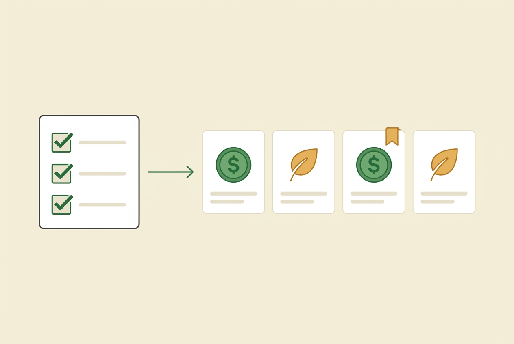
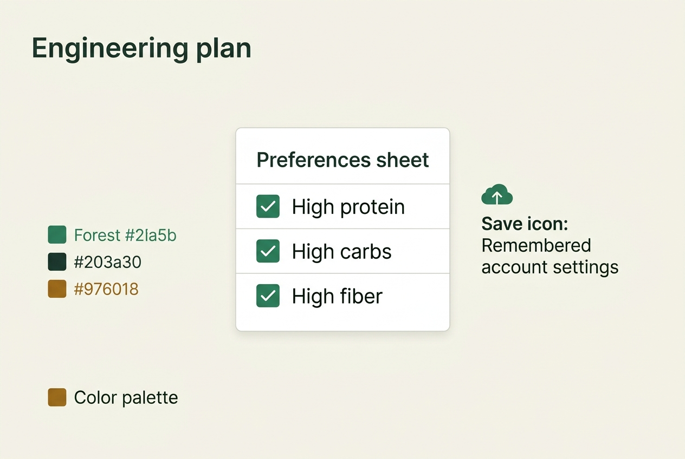
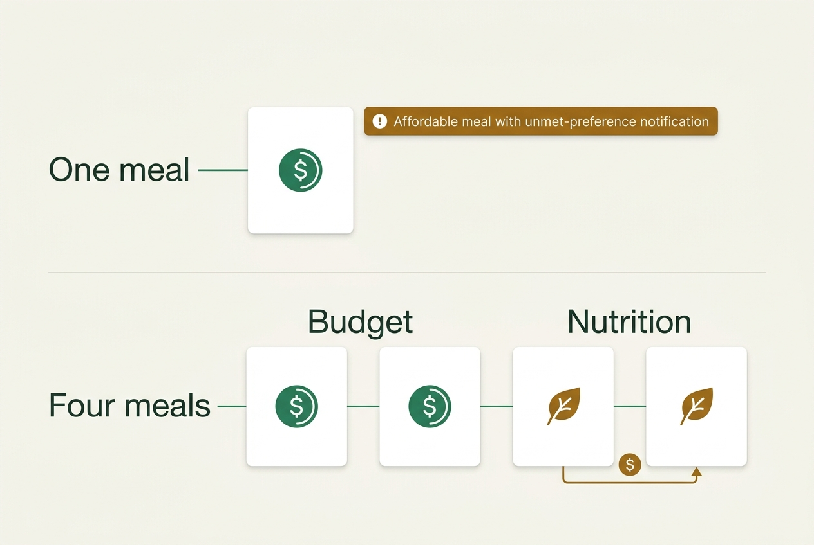

Engineering plan · Implemented 2026-10-24 (uncommitted; see Amendments for gate results)
Nutrition priorities for the meal picker

Purpose
Add independent High protein, High carbs, and High fiber checkboxes to the existing Meals → Preferences sheet. Save them per account and use them to guide the meal model’s selection and ordering. Deliver only this plan now.
Problem
The current picker has a remembered “Balance my meal” checkbox, but no explicit nutrient priorities. Suggestions are generated directly by Gemini rather than scored from a local recipe catalog. The prompt contains soft balance and evening guidance, and cost is currently a free-text, rough per-serving estimate. The parser truncates excess results but does not enforce an exact count or budget tradeoff policy.
Simply adding prompt text would leave conflicts ambiguous and could silently show over-budget food or omit the required explanation.
Solution and agreed behavior
- All three checkboxes default off, support any combination, and have equal priority. These are relative food preferences, not strict gram targets or verified nutritional claims.
- Keep “Balance my meal” separate and unchanged as a control. Nutrient preferences work independently of it and of the diabetes feature flag.
- Persist on the existing user document. With no account, changes remain local to the mounted picker; do not create anonymous cloud records.
- Label the existing budget input Budget per serving, validate a positive finite dollar amount, and use the same unit in prompts and results.
- When all requirements are achievable, favor meals matching the selected nutrients within budget. Do not force a mixed fallback or exceed budget unnecessarily.
- If constraints conflict, keep exactly the requested number and use the fallback allocation below. Nutrition-first alternatives may exceed budget, but must be clearly labeled. Budget-first options relax nutrition as necessary, never allergies or food safety.
- For a single requested meal, budget wins. A persistent visible notice must explicitly say the full preference combination could not be met and identify relaxed preferences—not just imply this through ingredients.
| Requested meals | Nutrition-first fallback | Budget-first fallback |
|---|---|---|
| 1 | 0 | 1 + prominent unmet-preference explanation |
| 2 | 1 | 1 |
| 3 | 1 | 2 |
| 4 | 2 | 2 |
| 5 | 2 | 3 |
Put budget-first fallback options first so an affordable choice is immediately discoverable; keep the split stable rather than letting evening scoring reorder it. Within each group, nutrient fit wins over soft balance/evening guidance. Explicit dishes, allergies, practical time constraints and safety remain respected. When no budget is set, preserve the requested count, prioritize the selected nutrients, and explain any remaining conflict without inventing a budget restriction. When no nutrients are selected, retain current behavior except for clearer budget input and exact-count validation.
Relevant files
Existing
- existing
lib/main.dart—AgentPageStatepreferences UI and subscriptions; initial/follow-up requests;AgentRequest;GeminiMealServiceprompt/parser;MealRecommendationserialization and card rendering. - existing
lib/settings/data/app_preferences_repository.dart— user-scoped preference interface, streams, and merged Firestore writes. - existing
lib/meals/saved/saved_recipe.dart,lib/meals/saved/saved_recipe_page.dart,lib/meals/saved/saved_recipes_repository.dart— verify new tradeoff fields survive saved-recipe storage and display. - existing
test/agent_meal_balance_test.dart,test/support/fake_preferences_store.dart,test/diabetes_feature_navigation_test.dart— update allAppPreferencesStoreimplementers when extending its interface. - existing
test/agent_retry_test.dart,test/meal_recommendation_card_test.dart,test/saved_recipes_test.dart,test/large_text_test.dart,test/accessibility_guidelines_test.dart— retry, card, persistence and accessibility regressions. - existing
firestore.rules— existing owner-only user-document access already covers preferences; no rules change expected.
New
- new
lib/settings/models/meal_nutrition_preferences.dart— immutable three-boolean value object, robust map conversion, copy helper and selected labels. - new
lib/meals/services/meal_priority_policy.dart— pure count-allocation and response-validation helpers; avoid expanding unrelated architecture. - new
test/meal_nutrition_preferences_test.dart,test/agent_nutrition_preferences_test.dart,test/meal_priority_policy_test.dart,test/meal_budget_tradeoff_test.dart— model, UI, prompt, fallback and malformed-response coverage.
Implementation phases
Execute in order, top to bottom. Status: [] idle · [wip] in progress · [x] complete · [f] failed. All work below remains unstarted. Write failing tests for each behavior before its implementation.
[x] Phase 1: Durable nutrient preference contract
1.1. Model and repository
[x]Add immutableMealNutritionPreferenceswithhighProtein,highCarbs,highFiber, all false by default. Treat missing/non-boolean stored values as false; ignore unknown keys.[x]ExtendAppPreferencesStorewith watch/save nutrition methods. Store a map underusers/{uid}.mealNutritionPreferencesusing existing merge and timestamp conventions, preserving all unrelated preferences.[x]Update every fake implementation. Reuse existing injected-store patterns; add no package or Firestore migration.
1.2. Testing strategy
Unit-test all eight checkbox combinations, empty/legacy data, malformed fields, round trips and stable selected labels. Test the repository mapping/write payload using existing seams or a narrowly scoped test seam; do not add a mocking dependency solely for this change.
[x]flutter test test/meal_nutrition_preferences_test.dart test/agent_meal_balance_test.dart test/diabetes_feature_navigation_test.dart[x]flutter analyze— no missing interface implementations or introduced issues.
[x] Phase 2: Checkboxes, lifecycle and request snapshots

2.1. Preferences UX
[x]Add a “Nutrition priorities” section with threeCheckboxListTiles using stable keysagentHighProteinCheckbox,agentHighCarbsCheckbox,agentHighFiberCheckbox. Explain that multiple can be selected and budget tradeoffs will be shown.[x]Subscribe once per mounted account and cancel on dispose. Handle stream failures with a visible, recoverable preference-load message; do not overwrite an unread saved preference with defaults. Disable edits/generation until the initial nutrition read resolves, or explicitly offer continuing without saved preferences after an error.[x]Serialize preference saves and temporarily disable these three controls while saving; avoid rapid-toggle writes racing. On failure restore the last confirmed state and show a retryable plain-language error. Keep parent and open-sheet states synchronized; guard post-await updates after dismissal/disposal.[x]Change budget label to “Budget per serving.” Reject empty, nonnumeric, zero, negative, NaN and infinite values when budget is enabled; allow positive decimals and show inline errors.
2.2. Request propagation
[x]Add a default-empty immutable nutrition value toAgentRequest, populate it during generation and preserve it incopyWith. Preserve the exact request snapshot through retries, feedback and “Make it more balanced.”[x]Keep existing first-meal onboarding, balance checkbox, saved recipes and non-diabetes flows working. Do not auto-regenerate when checkboxes change.
2.3. Testing strategy
Widget tests with injected fake streams/stores: independent toggles, all-on/all-off, account reload/remount, read/write failures, rapid taps, dismissal while saving, missing user, budget validation and outgoing request capture via MockClient.
[x]flutter test test/agent_nutrition_preferences_test.dart test/agent_meal_balance_test.dart test/first_meal_guide_test.dart test/agent_retry_test.dart
[x] Phase 3: Nutrition-aware generation and checked budget fallback

3.1. Prompt and structured response
[x]Add a nutrition-priority prompt section only for selected preferences. High carbs means a more carbohydrate-forward meal using suitable grains, legumes, fruit or starchy vegetables—not automatically added sugar. High protein and high fiber use practical ingredients without gram guarantees.[x]Give one authoritative conflict hierarchy. Update contradictory evening “most sleep-compatible first” and balance guidance to defer to explicit nutrition priorities and fallback groups. Preserve optional diabetes notes without allowing them to veto high-carb selections.[x]Compute fallback group sizes in the pure policy helper: for N > 1, nutrition-first = floor(N/2), budget-first = N − floor(N/2); for N = 1, budget-first only. Include exact counts and required explanations in the prompt. Do not infer infeasibility locally from dish names.[x]Keep the current JSON array response shape. Add per-meal fields:priorityMode(“allPreferences”, “nutritionFirst”, “budgetFirst”),unmetNutritionPreferences(stable protein/carbs/fiber keys),constraintNotice(plain-language explanation or null), andestimatedCostUpperBoundPerServing(finite nonnegative number for budgeted responses). RetainestimatedCostPerServingfor display; specify numeric upper bound and range use the same estimate.[x]In fallback responses require explicit notices on affected meals, especially the sole budget-first result. Nutrition-first notices clearly identify budget overruns. Budget-first notices identify relaxed nutrient preferences and say the full combination could not be met. Non-budget conflicts can use unmet preference notices without creating a budget fallback split.
3.2. Response validation and compatibility
[x]ExtendMealRecommendationparsing, imagecopyWithandtoJsonto preserve metadata. Missing new fields in old saved recipes remain acceptable and render as before.[x]Validate fresh generation before image attachment. Reject an empty/wrong-count list rather than silently truncating; reject invalid modes, malformed numeric estimates, unknown or unselected unmet keys, and fallback responses with wrong group sizes or missing notices. Only require nutrition-specific metadata when nutrient priorities are active.[x]With budget enabled, every all-preferences/budget-first result must have an estimated upper bound ≤ the entered per-serving budget. A one-meal response may never exceed it. For mixed fallback, validate the approved split and at least one within-budget option, then place budget-first options first. Nutrition-first options over budget must have explicit notices.[x]UseFormatExceptionfor contract violations so the existing bounded AI retry path handles them. Preserve cancellation and request identity; do not add unbounded calls or a second retry loop. After exhaustion, display a recoverable failure, never fabricated cheap meals or an unmarked over-budget substitute.
if response.length != request.recommendationCount: reject
if budgetEnabled:
require valid numeric cost upper bounds
if response is fallback:
require approved mode counts and nonempty tradeoff notices
require each budgetFirst/allPreferences estimate <= budget
require at least one estimate <= budget
if requestedCount == 1 and any selected preference unmet:
require budgetFirst + explicit constraintNotice
3.3. Testing strategy
Pure policy tests and mocked Gemini responses, not paid live calls: all eight selections; counts 1–5; exact fallback splits; feasible/no-fallback; budget unset; budget equal to estimate; decimals; malformed/missing estimates and notices; wrong/extra/fewer results; single over-budget result; balance and evening guidance interactions; preserved selections on retries and feedback. Mocked responses demonstrate contracts, not nutritional accuracy.
[x]flutter test test/meal_priority_policy_test.dart test/meal_budget_tradeoff_test.dart test/agent_nutrition_preferences_test.dart test/agent_retry_test.dart test/agent_meal_balance_test.dart test/evening_food_context_service_test.dart
[f] Phase 4: Visible tradeoffs and regression verification
4.1. User-facing transparency
[x]Render nonempty constraint notices persistently near the card’s cost/reason, not only in a snackbar, hidden Q&A or diabetes-only glucose note. Label fallback cards “Budget-first option” or “Nutrition-first option”; identify over-budget estimates explicitly.[x]For one-result fallback, prominently show “I couldn’t meet all your preferences within your budget” plus the specific relaxed preferences. Display “Costs are estimates” with budget results. Notifications must work with diabetes disabled.[x]Use existing theme and spacing tokens, semantic labels and text rather than color alone. Ensure the expanded preference sheet and notices scroll/wrap on narrow screens at 200% text scale.[x]Keep notices when saving/reopening a recipe, but describe budget fit as belonging to the original request rather than the user’s current settings. Verify existing recipes without metadata still load.
4.2. Browser UI verification with the installed Playwright CLI
Use the existing playwright-cli setup, not Claude in Chrome. A Claude Code reviewer may drive this CLI, but browser evidence must come from Playwright. Read the installed CLI help/skill before use. Create an isolated named session with the default in-memory profile. Per the user’s explicit decision, use only isolated Playwright CLI browsers: never use attach, CDP connections to personal Chrome, --persistent, --profile, imported personal storage/cookies, Claude in Chrome, or the regular-browser harness for this project’s verification. Do not enable remote debugging on the user’s browser. Any future departure requires fresh user approval.
[x]After implementation, start the Flutter web app on localhost with deterministic meal-service fixtures and a test account/store. Do not use real personal health records or make paid live model calls. If a browser-test fixture entry point is needed, keep it test-only; do not weaken production authentication. Result: test-only entry pointtest_driver/nutrition_ui_fixture.dart(in-memory stores, MockClient Gemini built from the outgoing prompt, no Firebase, no live calls); production auth untouched.[x]Runplaywright-cli -s=nutrition-ui-review open http://127.0.0.1:8080 --browser=chromeagainst the running test app. Capture snapshots and use supported semantic/visible controls; if Flutter canvas rendering prevents targeting, enable the app’s supported accessibility semantics rather than guessing clicks. Result: opened in an isolated session; the fixture enables Flutter semantics, so all controls were targeted through accessibility snapshots.[f]Exercise all three independent checkboxes, combined selection, account persistence after remount/reload, and a failed preference save. Verify checkbox labels/states and visible error recovery, not only a generated image of the intended UI. Result: independent and combined toggles, remount persistence and the failed-save rollback/error all passed. Persistence after a browser reload was not exercised: the fixture store is in memory. Firestore persistence is covered by unit/widget tests only.[x]Exercise deterministic feasible and conflicting fixtures for counts 1–5. Check exact result counts and approved splits, within-budget estimates for budget-first results, over-budget labeling, and the prominent single-result unmet-preference notice. Repeat essential flows with diabetes disabled. Result: conflict splits 1→0/1, 2→1/1, 3→1/2 budget/nutrition, 4→2/2, 5→3/2; budget-first always first, ≤ budget; nutrition-first labelled “Over your budget”; single-result heading shown; feasible 1/3/5 with no tradeoff UI; always-invalid gave 5 bounded attempts then a recoverable error; diabetes off and on.[x]Inspect desktop (1280×900), mobile (390×844), and 200% text scaling; verify scroll access, keyboard focus, labels and no clipped notices. Capture screenshots of the actual preference sheet and fallback results at each size; inspect browser console/network failures. Result: no clipping at any size; console 0 errors. Keyboard check found focus jumping off a nutrition checkbox after each save; fixed (focus restored after the save settles) with a red→green widget test and re-verified in the browser.[x]Save a short evidence report plus screenshots with viewport, fixture, commands, observed results and limitations. An independent reviewer inspects the screenshots against this plan. Close onlynutrition-ui-reviewand stop the test server; never useclose-allorkill-all. Result: REPORT.md, screenshots,evidence-snapshots.txtandSHA256SUMS.txtsaved. Three independent screenshot reviews; the first two found evidence gaps (an overwritten capture, ambiguous focus shots, missing 200% shots), which were recaptured; the third passed. Onlynutrition-ui-reviewwas closed; the server was stopped.
Useful commands: playwright-cli -s=nutrition-ui-review snapshot, resize 390 844, screenshot --filename=path.png, console error, and close (repeat the named-session prefix). Record blockers explicitly; the current HTML-plan smoke check below does not satisfy this app UI gate.
4.3. Testing strategy
Add card/widget assertions for visible single-meal failure explanations, over-budget labels, no-notice happy path, semantics/large text, persistence round trips and old recipe compatibility. Then run the full suite and manual smoke checks.
[f]flutter test test/meal_recommendation_card_test.dart test/meal_budget_tradeoff_test.dart test/saved_recipes_test.dart test/saved_recipes_page_test.dart test/large_text_test.dart test/accessibility_guidelines_test.dartResult: all feature tests pass; the 8 pre-existingaccessibility_guidelines_testfailures from the baseline are unchanged (no new failures).[f]flutter analyzeResult: exit 1 solely due to the pre-existing info atlib/design/app_theme.dart:56; no new issues.[f]flutter testResult: failing set identical to the 11-test pre-existing baseline (accessibility_guidelines ×8, app_theme ×1, auth_page ×2); no new failures.[x]Manual smoke: save multiple preferences, remount, generate with 1 and 4 choices using deterministic fixtures, verify single-result notice and 2/2 fallback, reopen a saved meal, test 200% text and keyboard navigation.
Global validation commands
[f]dart format --output=none --set-exit-if-changed lib test— format gate; distinguish unrelated pre-existing formatting problems. Result: fails only on the same 21 pre-existing unrelated files (cgm, sleep, exercise, several services and tests); every file touched by this work, plustest_driver/, is clean.[f]flutter analyze— static analysis. Result: 1 issue, the pre-existing infoapp_theme.dart:56(exit 1); no new issues.[f]flutter test— full regression suite. Result: failing set identical to the 11-test pre-existing baseline; no new failures.[x]git diff --check— whitespace integrity. Result: exit 0.[x]Complete Phase 4.2 Playwright UI verification and review its screenshots/evidence report; a passing widget suite alone does not satisfy the browser gate. Result: done; see the Phase 4.2 results and REPORT.md. The reload-persistence sub-check is recorded as [f] in Phase 4.2.
Decisions, boundaries and implementation notes
User decisions recorded during planning
- Use existing Meals → Preferences; save per account.
- Permit all checkbox combinations, equally prioritized; no strict nutrient gram targets.
- Always return the requested meal count; approved 1–5 fallback allocations above.
- Over-budget nutrition-first alternatives are permitted only when there is room for alternatives; always retain an option within the estimated budget.
- With one requested option, prioritize budget and explicitly notify the user when all preferences cannot be achieved.
- Budget is per serving.
Playwright setup smoke check — 2026-10-24 (plan page only)
Found installed playwright-cli 0.1.22. Opened an isolated Chrome session named nutrition-plan-review. Direct file:// access was blocked, so served only specs/ through a temporary loopback HTTP server. Successfully loaded this plan and all three Gemini illustrations (HTTP 200), asserted exactly three decoded images with positive natural widths, and checked document width did not exceed viewport width at 1280×900 and 390×844. Captured and visually inspected desktop screenshot and mobile screenshot. Both show readable header/content and an intact overview. The only console error was an unrelated missing /favicon.ico (404). Closed the owned browser session and stopped the server.


This is a light verification of the installed browser workflow and HTML plan only. It does not test interactive checkboxes, persistence, generated meals, 200% scaling or the future Flutter UI. Those remain unstarted Phase 4.2 requirements. Earlier Claude-in-Chrome checks were superseded at the user’s request.
Regular-browser harness preflight — blocked; isolated Playwright selected
Found the harness browser outline at ~/.pi/agent/docs/BrowserAutomation.md and installed browser-harness 0.1.13. Its doctor reported no healthy existing daemon. A bounded localhost-only smoke attempt failed before page navigation: DevToolsActivePort not found; daemon startup could not connect to regular Chrome. No successful page read occurred through that route. The temporary server was stopped. The user chose to keep remote debugging off and continue with isolated Playwright CLI only. This is a recorded blocker for the optional regular-browser route, not a failure of the already-passing isolated Playwright smoke test.
Architecture: stay within the current Flutter, Firestore and Gemini stack. No nutrition API, local recipe-ranking engine, new dependency, independent settings screen, calorie target editor, migration or medical-treatment change. Keep broad refactors of the large main.dart out of scope. New helper/model filenames are local, reversible choices.
Extreme budgets: if the model cannot supply even one safe meal within its estimated budget, fail transparently through the existing retry/error surface rather than falsely asserting compliance. The exact-count requirement applies to successful responses, not fabricated outputs. Explain that the user may revise constraints and retry.
Scalability: one small preference map per user and one lifecycle-managed stream; no recipe database, fan-out generation or extra live model calls. The fixed 1–5 option limit keeps policy validation trivial.
Workspace preservation: many app/platform files were already modified when inspected, including lib/main.dart. Do not reset, reformat or overwrite unrelated work. Inspect current diffs and establish baseline checks again before implementation.
Planning evidence: inspected settings repository, picker UI/request/prompt/parser/card model, existing tests, Firestore rules, project README and relevant UI guidance. No AI_DOCS/ or APP_DOCS/ directories were found. Tests and analyzer have not been run for this plan-only task. All three current illustrations generated with Gemini; contain no project data or credentials. The original Pollinations overview was replaced and removed.
Amendments
2026-10-24T05:45:00Z — Execution results and deviations
- Baseline before work:
flutter testhad 11 failures (accessibility_guidelines ×8, app_theme ×1, auth_page ×2),flutter analyzehad 1 info (app_theme.dart:56), and 21 unrelated files failed the format check. Final runs show exactly the same set, with no new failures or issues. Gates that fail only on this baseline are marked[f]with notes. - Deviation — validation: independent review found that budget comparisons were skipped when no nutrient priority was selected. Fixed so budget checks apply whenever a budget is set, and fallback modes are rejected without priorities; the prompt now asks budget-only requests to stay at or under the budget.
- Deviation — model field: added
MealRecommendation.requestBudgetPerServingso cards and saved recipes can describe budget fit against the original request. - Deviation — keyboard focus: Playwright found that keyboard focus left a nutrition checkbox after every save, because the boxes are disabled while saving as the plan requires. Fixed by restoring focus to the toggled box after the save settles (red→green widget test; re-verified in the browser).
- New test-only file:
test_driver/nutrition_ui_fixture.dart, the browser fixture entry point (in-memory stores, MockClient Gemini, no Firebase). Not part of the production build. - Not covered: persistence after a browser reload (the fixture store is in memory; Firestore round trips are unit/widget-tested). Saved-recipes list titles truncate without an ellipsis at 200% text (pre-existing
saved_recipes_page.dart:172). - Process notes: workers' allowlist blocked
flutter/dart, so the root and the harness acceptance runs executed all checks. One automatic verifier failed to spawn (ENAMETOOLONG); the root reviewed that phase directly.
2026-10-24T03:02:05Z — Additional Gemini illustrations
At the user’s request, added two Gemini-generated illustrations covering the independent saved checkboxes and the approved budget fallback examples. The original overview remains. A third requested pipeline illustration could not be generated because the provider reported exhausted quota; it is not embedded or counted as delivered. Engineering scope, decisions, task statuses and acceptance criteria are unchanged. Illustrations are conceptual; written requirements remain authoritative.
2026-10-24T03:03:01Z — Replace remaining Pollinations artwork
Replaced the original overview with a newly generated Gemini illustration and removed the superseded Pollinations image file at the user’s request. All three embedded images now use Gemini. Implementation scope and task statuses remain unchanged.
2026-10-24T03:09:17Z — Playwright browser verification gate and setup smoke test
At the user’s request, added actual-app browser verification to Phase 4 and global acceptance, using the existing Playwright CLI in place of Claude in Chrome. Lightly tested the installed CLI against this HTML plan at desktop and mobile sizes; screenshots and limitations are recorded above. No feature implementation has started and the future app UI gate is not marked complete.
2026-10-24T03:14:53Z — Isolated Playwright only
Recorded the failed regular-browser harness preflight and the user’s decision to keep remote debugging off. Phase 4.2 now explicitly forbids personal-profile, CDP attachment and regular-browser routes unless separately approved later. Existing isolated Playwright smoke evidence remains valid; feature implementation and actual-app UI verification remain unstarted.